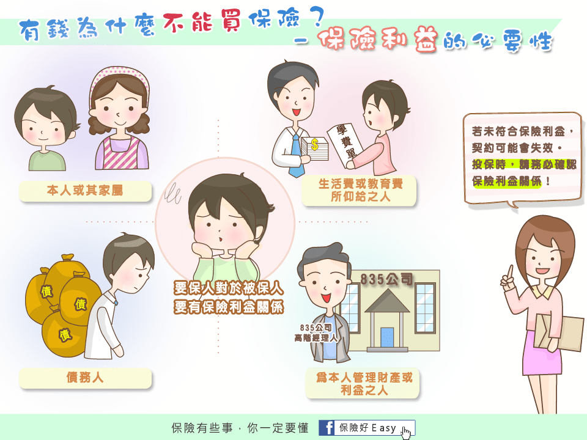

壽險
針對身故或全殘理賠一次性的保險金。
若不幸身故，理賠額度需要夠用於預留給家庭的生活費、小孩的教育費用、房貸車貸、自身的喪葬費用。
幼稚園至大學畢業之費用約120~300萬；一般喪葬費用約30萬。
壽險的額度要看自身情況而定，像是剛出社會的小鮮肉，沒有妻小也無房車貸，就不需要買壽險囉~
殘廢險 & 殘扶險
殘廢險 - 針對殘廢理賠一次性的保險金。
殘扶險 - 針對殘廢理賠定期性的保險金，如每月給付殘扶金3萬，給付180個月。
若不幸殘廢，理賠額度需夠用於收入中斷後家庭的生活費、小孩的教育費用、房貸車貸、自身的看護費用。
以30歲極重度的身心障礙者來說，平均可以存活38年(大多已是不能自理、需要他人密切照顧的狀態)，外籍看護每月2萬，看護費用至少900萬，建議額度要1,000萬以上。
重大疾病險 & 重大傷病險
重大疾病險 - 針對七項疾病，包含心肌梗塞、冠狀動脈繞道手術、腦中風、末期腎病變、癌症、癱瘓及重大器官移植，理賠一次性的保險金。
重大傷病險 - 依據健保重大傷病卡資格(含癌症)，理賠一次性的保險金。
若不幸導致重大疾病，能用於收入中斷期間家庭的生活費、自身的醫療費用。
目前主要以這兩種商品作為防癌的規劃，建議額度200萬以上。
癌症險
療程型 - 針對初次罹癌理賠一次性的保險金(通常金額較少)，並依實際醫療行為，像是放射線治療、化療、癌症住院或是癌症手術等，理賠特定項目的保險金。
一次給付型 - 針對初次罹癌理賠一次性的保險金。
因療程型的理賠被限縮在條款規定的項目上，難道治療前還要翻條款看這會不會賠來決定治療方式嗎？
所以一次拿到大筆理賠金才是王道！但一次給付型對成人來說不便宜，目前都以重大疾病與重大傷病取代。
意外險
意外死殘 - 針對意外事故導致的身故及殘廢，理賠一次性的保險金。
意外實支 - 針對意外事故導致的醫療費用，理賠醫療保險金。
用途與前述部分險種相同，但僅包含意外導致之事故，可做為補強之用。
初步了解險種的功能以及要買的額度後，是不是很想開始找商品了呀？
別急別急，在這之前，還有一些保險的特性需要報呼哩摘，以免落入高保費低保障的陷阱裡。

本網站所有文章分享之圖片、影片、文章或資料內容是引用自網路或轉寄分享或從各網站蒐集而來。
其著作權皆屬原作者所有， 如原著作者與分享者不同意轉貼，請立即告知，將立刻處理並砍檔。
一、保險新手村
三、主約 & 附約
四、期末心得